Worked examples
Each example takes a few minutes, uses one of the demo datasets, and names every control exactly as it appears in the sidebar. They are written so that someone who has never used a spatial transcriptomics viewer can follow them and see what the tool is for. The user manual explains each control in full; this page shows why you would reach for it.
Every screenshot on this page was taken from the viewer itself, on the dataset the example names, with the settings the example gives. Nothing was drawn afterwards.
The demo datasets
Four small datasets come with the repository and appear in the Dataset menu as soon as the viewer opens. Three larger, real datasets are published as release assets; one command fetches them:
python3 sample_data/fetch_samples.py| Menu entry | Platform | What it is | Used in |
|---|---|---|---|
mouse_ileum_tiny | Xenium | Three 640-px patches of mouse ileum (36 cells) from 10x's tiny example run, with example cell-metadata/, edge-metadata/ and two extra edge sets. In the clone. | 3 |
visium_hd_tiny | Visium HD | A corner of 10x's "Tiny Mouse Brain" Space Ranger output, 8 µm and 16 µm bins. In the clone. | 4 |
visium_tiny | Visium | Synthetic classic Visium slide, 252 spots. In the clone. | — |
seqfish_synthetic | seqFISH | Synthetic Spatial Genomics GenePS region, 36 cells. In the clone. | 5 |
xenium_human_breast_2fov | Xenium | 10x's human breast example, two fields of view, 7,275 cells, DAPI image, NICHESv2 edges. Fetched. | 1, 5, 7 |
visium_mouse_kidney | Visium | 10x's mouse kidney coronal section, 1,438 spots on tissue, NICHESv2 spot–spot edges. Fetched. | 4 |
cosmx-mousebrain | CosMx | Bruker/NanoString 1000-plex mouse brain, coronal section, 38,996 cells, no image. Fetched; non-commercial licence. | 1, 2, 6 |
When the viewer opens, Morphology, Transcripts and Edges are unticked, so you see cell outlines on a dark canvas. Every example below starts by ticking what it needs.
1Where is the signalling?
NICHESv2 scores every neighbouring pair of cells for every ligand–receptor mechanism it can see in the panel. TissuePlex draws that as a graph on the tissue: first the tissue graph, every pair of cells close enough to be scored, then the scores as colour on those same lines. Start with the structure, then ask where the signalling is. A coronal mouse brain section is a good first dataset because you already know its anatomy, so you can judge the answer.
- Choose cosmx-mousebrain in the Dataset menu. This dataset ships no image, so the cells are drawn on a frame sized from the data.
- Under Cell Segments, drag sample to 100% and fill down to about 12%, so the 38,996 cells sit as a faint ghost under the lines.
- Under Edge Data, drag sample to 100% and set the Tissue Graph opacity to about 60%. This is figure 1a.
- Tick Edges, raise its opacity to 100%, lower width to 1, and drop the tissue graph back to 15% so it reads as a faint scaffold under the coloured lines.
- In the legend under edge color, switch auto to robust 5–95%. This is figure 1b.
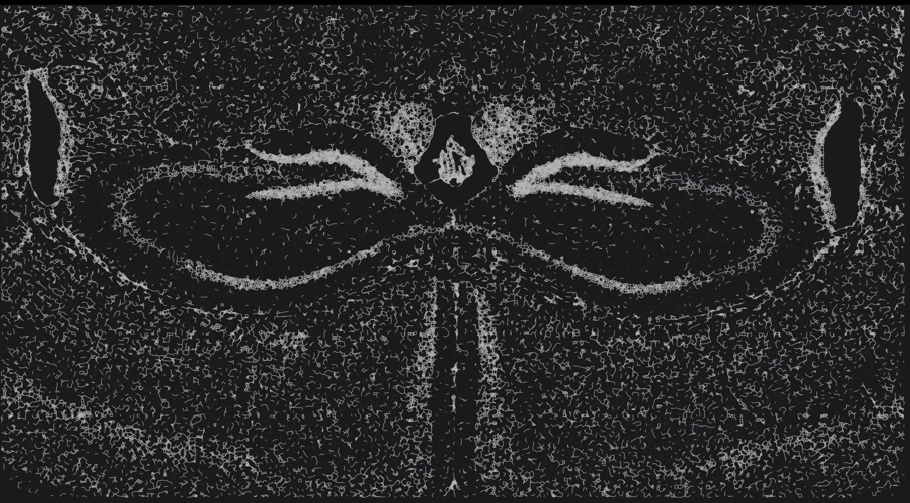
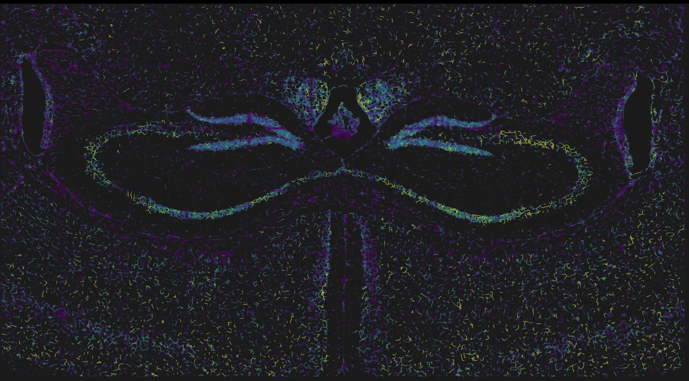
What to notice
- The strongest summed signalling follows the dense cell layers: the pyramidal layers of the hippocampus and the dentate gyrus light up, as do the midline structures. That is partly biology and partly geometry, since a cell with more neighbours accumulates more scored pairs. Example 2 is how you separate the two.
- Untick a mechanism in LRM Mechanisms and the colours update at once; the lines that only carried that mechanism disappear. Tick none, then one mechanism, to see where a single ligand–receptor pair is active.
- Edges are directed. Zoom in, raise offset, and A→B and B→A separate into two parallel lines with harpoon arrowheads, like a chemistry equilibrium arrow.
- Hold Shift and click a line. A floating EDGE panel lists the sending and receiving cell, every mechanism scored on that pair with its share of the total, and any annotations from
edge-metadata/.
The same two steps on a different platform
Nothing above is specific to CosMx. The pair below is the Xenium human breast example (two fields of view, 7,275 cells, 44,759 pairs) drawn with the same settings. Its scores are tightly bunched rather than heavy-tailed (median 9.1 in a span of 4.7–12.0), so here the range is a stated clamp rather than the robust window.
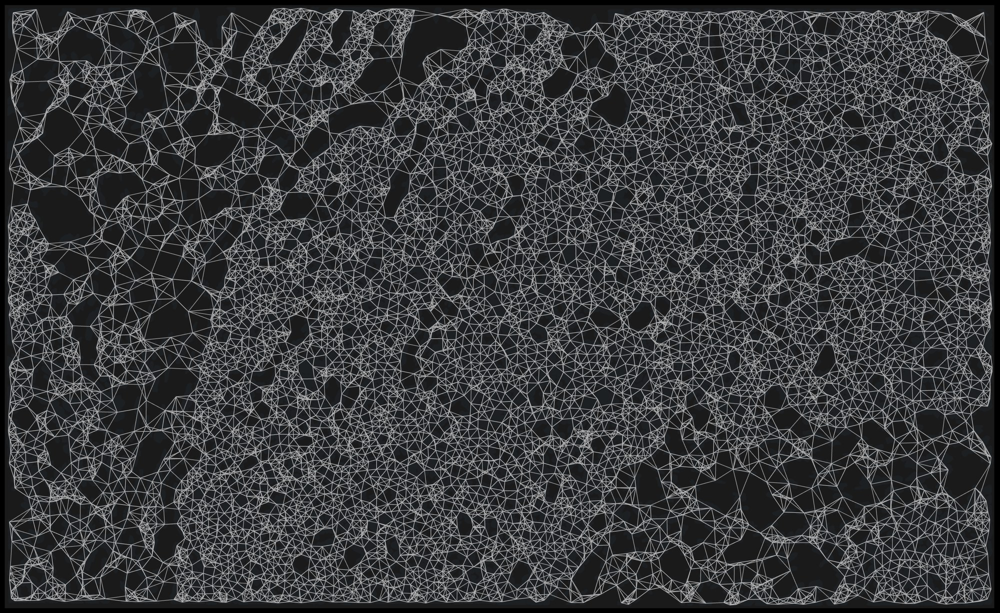
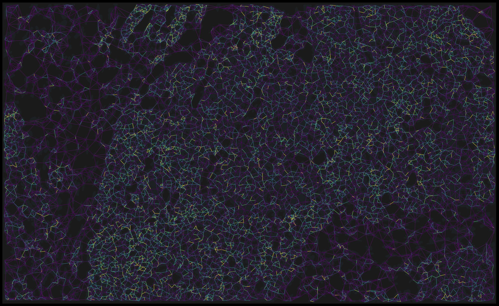
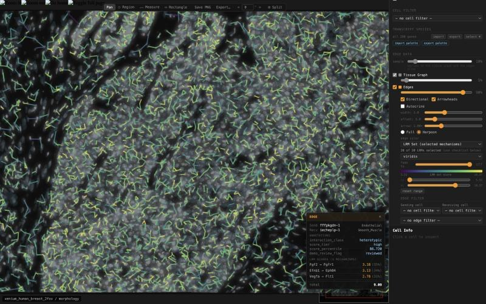
Open Edge Filter and set Sending cell to a cell-type column. Only edges leaving that cell type remain; the tissue graph underneath is untouched, so you can still see the neighbourhood structure the filter removed.
2One cell's neighbourhood
The scored graph answers "where"; the neighbourhood view answers "who, and through what". Zoom into the hippocampus first: at this scale the dentate gyrus and the CA pyramidal layer resolve into individual cells, and the graph becomes readable as a graph. Then click any cell and TissuePlex will show every cell it exchanges signal with, how far they reach, and which mechanisms dominate across those edges.
- With the settings from example 1, zoom into the hippocampus with the mouse wheel until single cells are clear.
- Click a cell in the pyramidal layer (a plain click, no Shift). The Cell Info block at the foot of the sidebar fills with its id, position and metadata.
- Click show local neighbourhood at the bottom of that block.
- Zoom in once more, until the cell and its neighbours fill the view. Untick Tissue Graph, raise offset to 3 and choose Harpoon, so each pair of cells shows its two directions as separate half-arrows.
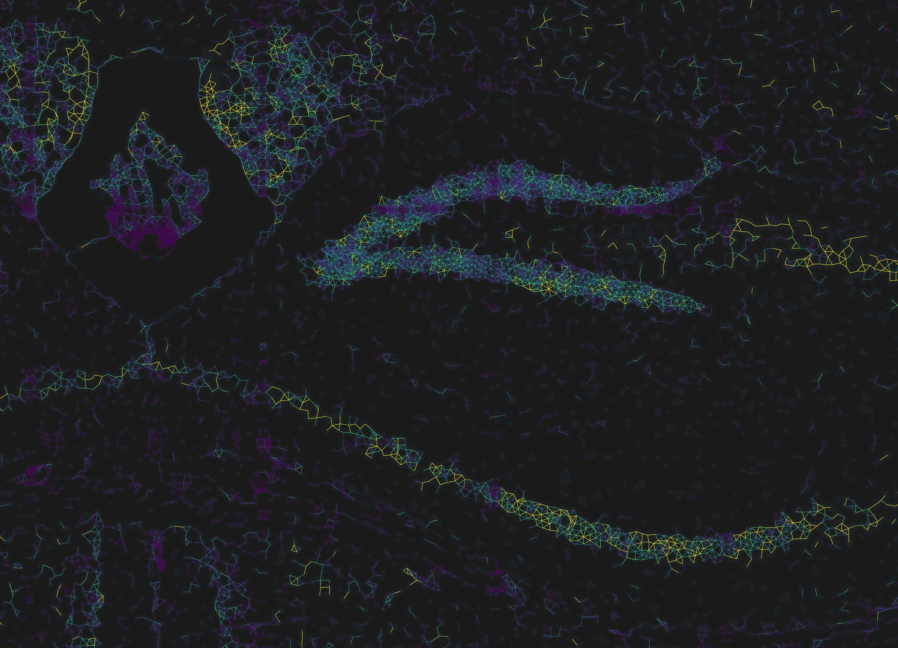
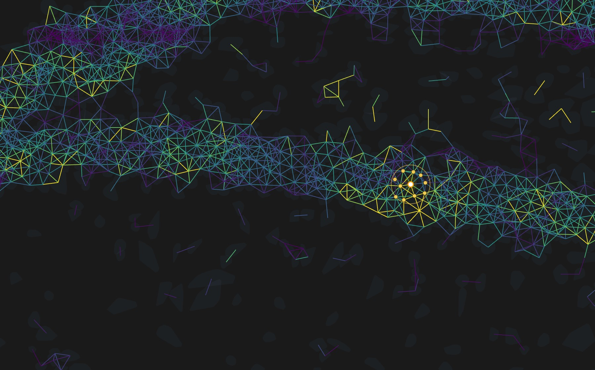
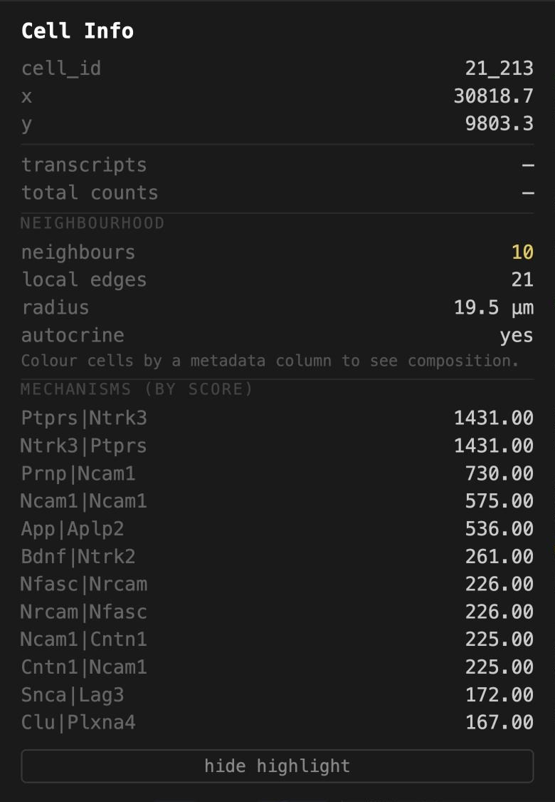
The neighbourhood is computed from the whole edge file on the server, not from the lines currently drawn. So the count is complete even when the edge sample slider is below 100%, and it is the same wherever you have scrolled to. Colour cells by a metadata column first and the block also reports the neighbourhood's composition by that column.
3Your own annotations, without touching the data
Most analysis happens in R or Python after the instrument has finished. TissuePlex reads that work from two plain folders dropped beside the dataset, so clusters, scores or review flags appear in the viewer without regenerating anything:
cell-metadata/, one row per cell, keyed on the cell barcode.write.csv(df, "cell-metadata/clusters.csv")from R works as is.edge-metadata/, one row per cell pair, keyed on"Sender|Receiver".
The demo dataset ships both. Its cell-metadata/example_clusters.csv has a
seurat_clusters column with twelve integer levels, chosen on purpose: integers
are the common case for cluster ids and the awkward one for a viewer. It is a tiny
fixture, three 640-pixel patches with 36 cells, so the figures here are small by nature;
everything in it works the same on a full run.
- Choose mouse_ileum_tiny and zoom into the middle patch. Raise outline to 50% under Cell Segments.
- Under Cell Color, tick Color cells, choose Cell metadata, then seurat_clusters.
- The legend lists clusters 0 to 11 in numeric order with a swatch each; click a swatch to change its colour, or import palette to load a
category,#hexfile. - Hold Shift and click an edge: the EDGE panel opens with an Annotations block from
edge-metadata/example_annotations.csv.
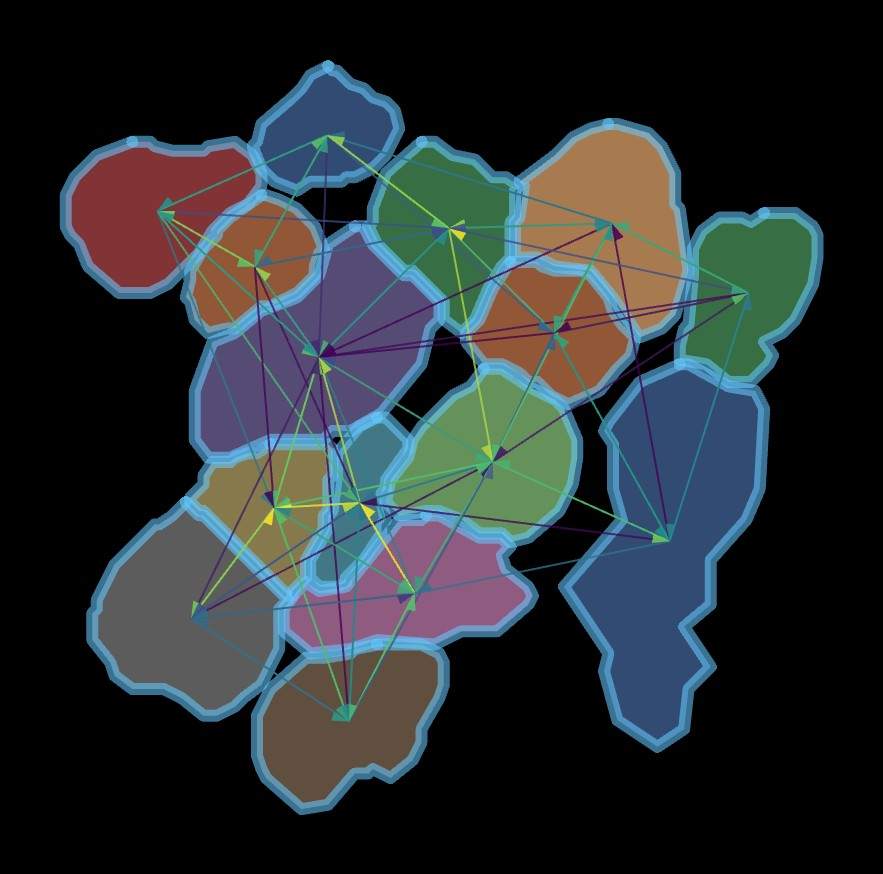
seurat_clusters from a CSV in cell-metadata/, with the NICHESv2 edges between them. The viewer recognised twelve integer levels as categories rather than a 0–11 gradient; treat as categorical is there to override that call either way.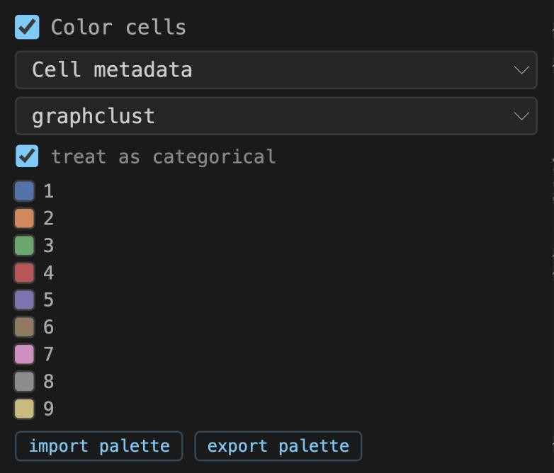
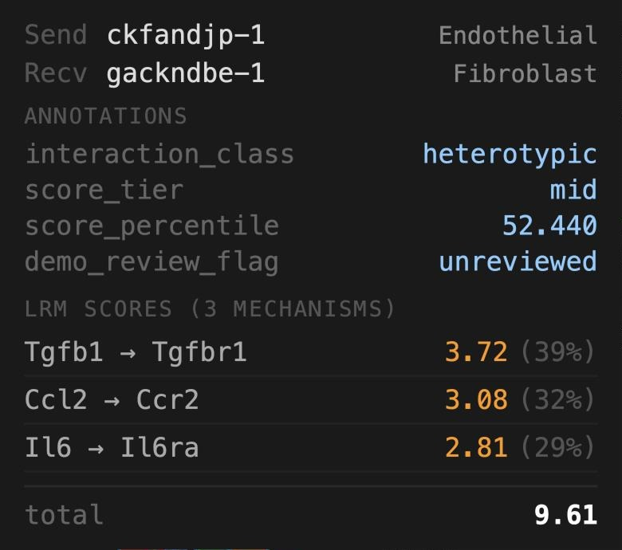
edge-metadata/, above the three mechanisms NICHESv2 scored on it. The folder's README says which of those columns are derived from the edge file and which one is invented.What to notice
- The same column is offered under Cell Filter. Choose it there and untick all but one cluster: the remaining cells are drawn at full density, because the filter is applied on the server before sampling.
- Annotation columns also appear in the edge color and Edge Filter menus, so a review flag or a confidence tier can colour or subset the edges directly.
- The cell types in the EDGE panel header (Endothelial, Fibroblast) come from the edge file's own
sending_type/receiving_typecolumns, which NICHESv2 writes only when asked; in this fixture they are simulated.
This dataset also has three edge sets. The Edge source menu at the top of the sidebar switches between edges, edge.raw.minimum and edge.normalized.product, each a different scoring of the same tissue.
4Spots and bins: the array platforms
Classic Visium measures 55 µm spots on a 100 µm hexagonal lattice, each covering one to ten cells; Visium HD tiles the capture area with 2, 8 or 16 µm square bins. Neither has per-molecule coordinates. TissuePlex draws a polygon per unit, a 16-sided circle for a spot and a square for a bin, so colouring, clicking, filtering and NICHESv2 edges all work exactly as they do for cells. The sidebar relabels itself: Spot Segments and Spot Info on Visium, Bin Segments on HD.
- Choose visium_mouse_kidney. Tick Morphology and raise it to about 85%: this one is a brightfield H&E, so it wants to be bright. Set spot fill to 0 and outline to 50% so the stain shows through the rings.
- Tick Edges (100%, width 1), leave the Tissue Graph at 15%, and set both sample sliders to 100%. Keep the colour range on robust 5–95%: spot-level scores are summed over many cells and have a long tail.
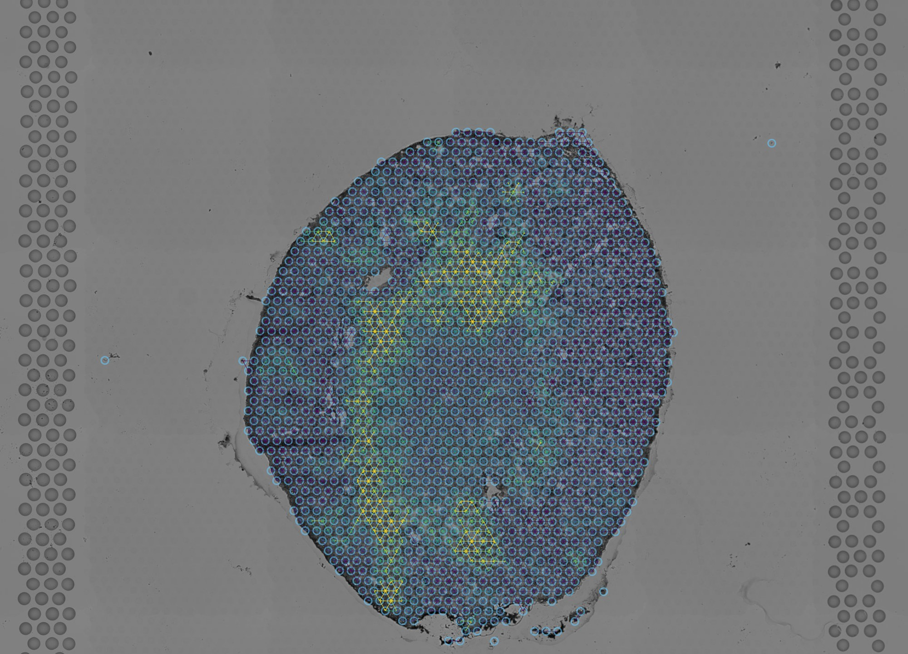
- Zoom into the cortex until the lattice resolves and raise offset to 2. Each spot now shows its six neighbours' edges as paired half-arrows converging on its centre.
- Use ⟷ Measure between two adjacent spot centres: the label reads 100 µm, the lattice pitch, which is how the pixel size of this platform is derived (Space Ranger does not record one).
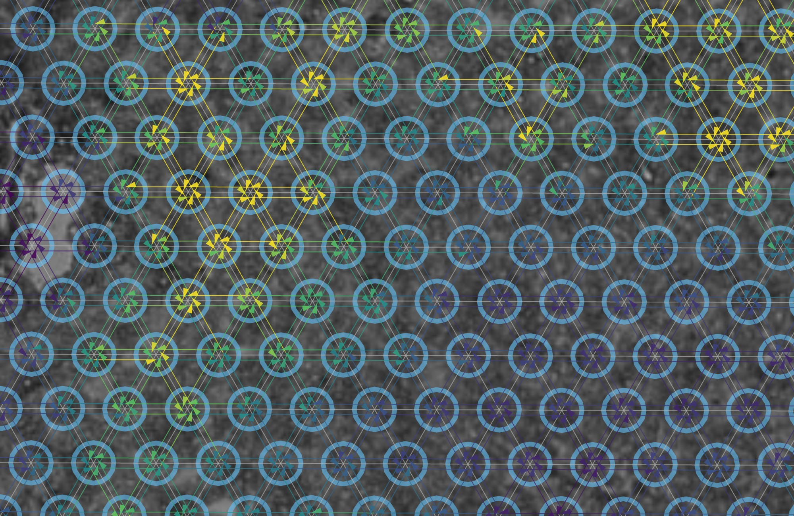
- Choose visium_hd_tiny. The tissue sits in one corner of the frame, because 10x's "tiny" dataset is a corner crop; zoom into it.
- Untick Edges and Tissue Graph, tick Color bins and choose Gene set (selected species). With every gene selected that is total UMI per bin, on an auto range.
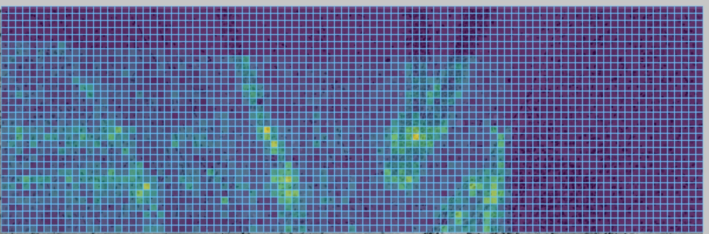
Edges on classic Visium connect spots, each a mix of one to ten cells. Say so in a figure legend. The HD bins are closer to single cells but still a grid, not a segmentation.
5Transcripts inside their cells
Imaging platforms record every transcript as a point with a gene name. TissuePlex draws those points where they were detected, over the nuclear stain and inside the cell outlines they were assigned to, coloured by gene, and filters them by gene in the browser without a round trip to the server. The question this answers is the one a histologist asks of an in-situ stain: which cells, exactly, express this?
- Choose xenium_human_breast_2fov. Tick Transcripts and drag its sample to 100%; leave dot at 3 px. Under Cell Segments, drag sample to 100%, fill to 0 and outline to 60%. Tick Morphology at 70% for the DAPI.
- Zoom into the stroma, the darker tissue to the left of the tumour, until single cells are clear, about 200 µm across. Hover a dot: the tooltip names its gene and, on Xenium, its Q-Score. This is figure 5a.
- Under Transcript Species, click select ▼, then
none, and tick LUM, ACTA2, CD68 and PECAM1; or click
import and choose
sample_data/example_lists/breast_stroma_markers.csv. The dots update at once. import palette withbreast_marker_palette.csvgives them the colours used here. This is figure 5b. - Pan right to the edge of the tumour and import
breast_tumour_markers.csv(EPCAM, LUM, MKI67). This is figure 5c.
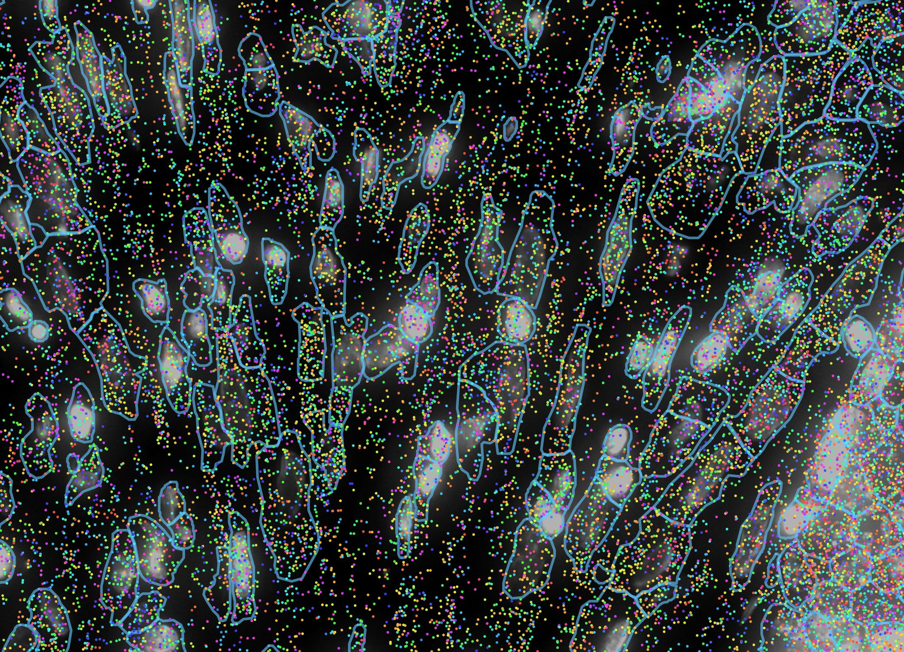
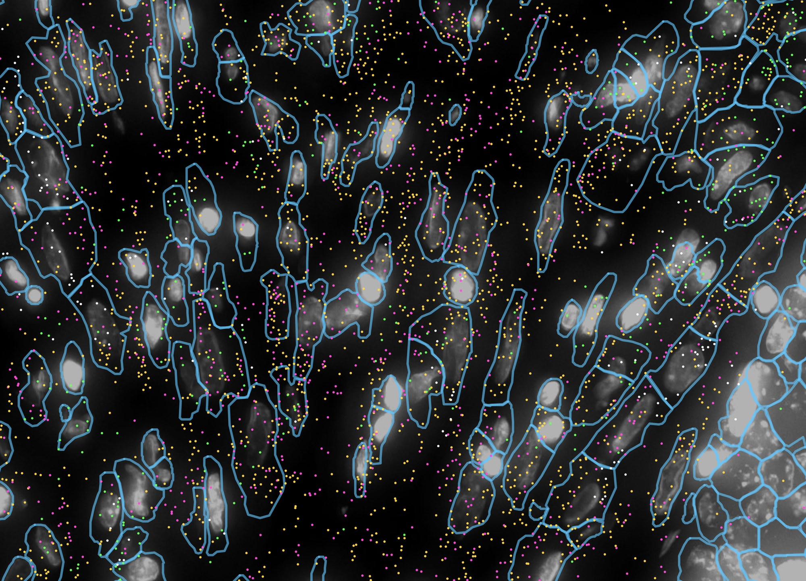
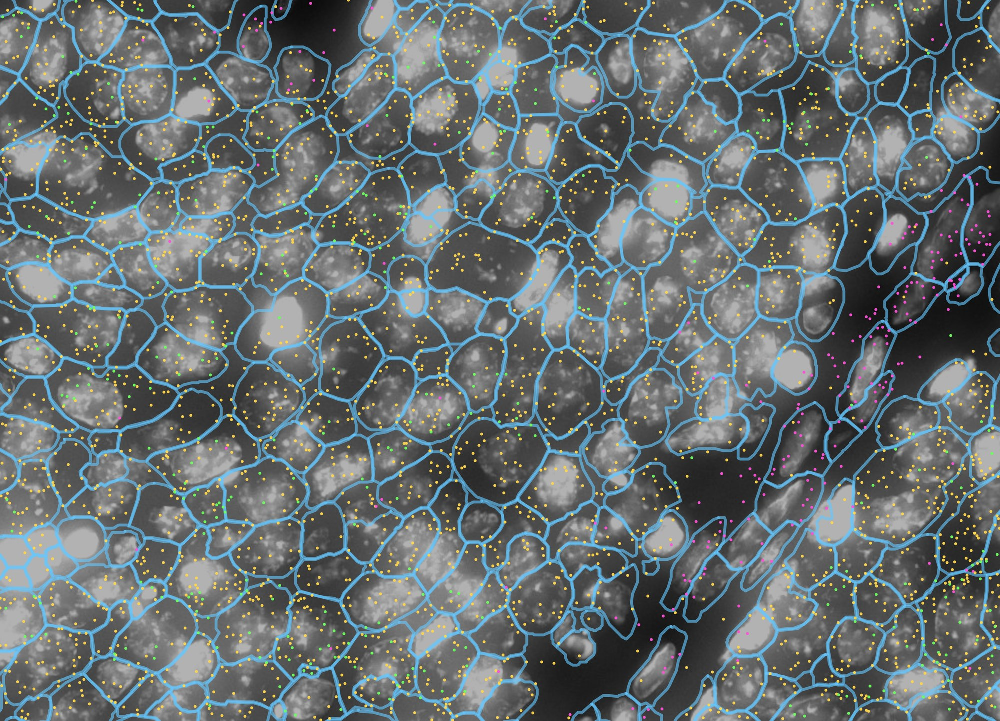
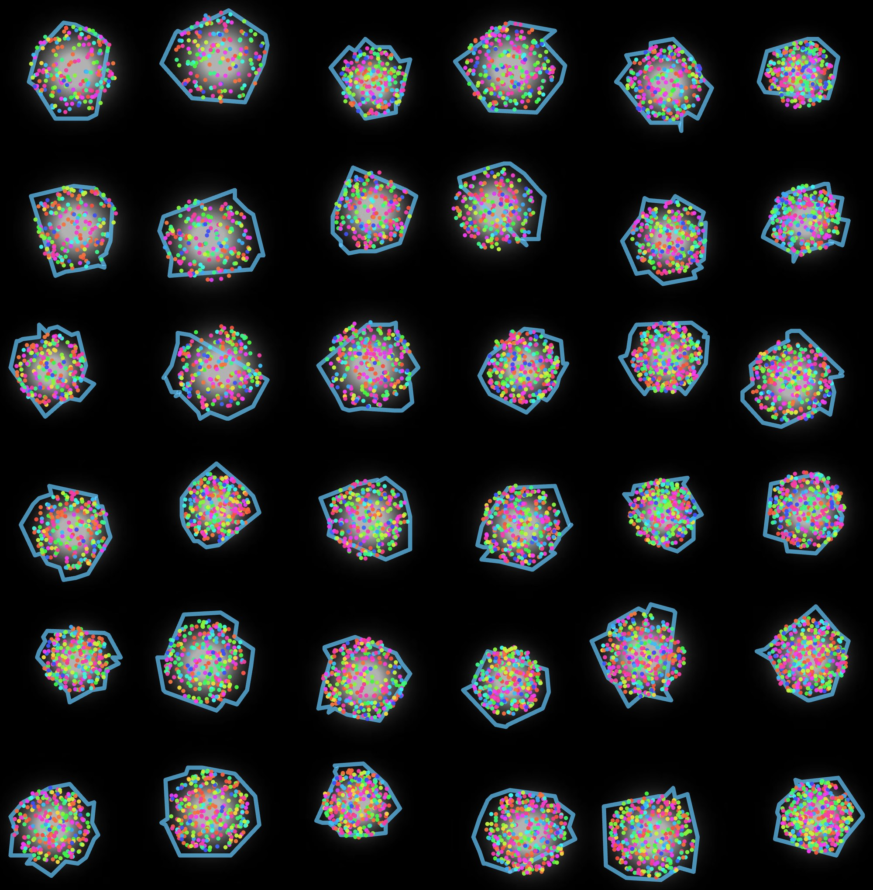
seqfish_synthetic is a 36-cell fixture made by sample_data/make_seqfish.py,
not tissue, and it exists for a reason worth knowing: on this platform the cell
outlines (GeoJSON) are in pixels and the transcripts (CSV) are in microns. The reader
decides each table's units separately, which is why both land on the same cells; a
viewer that applied one transform to everything would draw the dots at a hundredth
of the size of the outlines. All 10,026 transcripts of its 36 genes are drawn.Xenium scores each transcript's decoding quality. Like Xenium Explorer, TissuePlex hides transcripts below Q 20 by default; tick show low-quality (Q < 20) in gray to draw them in gray. The counter counts only what is drawn.
6Side by side
Split mode shows two panels driven by one sidebar, and there are two different questions it answers. Which one you are asking decides what you hold fixed:
- The same mechanisms in two places. Hold the mechanism selection, change the view. This asks is this signalling stronger here or there? The sidebar stays linked, so the two panels cannot drift apart in anything but where they are looking.
- Two sets of mechanisms in the same place. Hold the view, change the selection. This asks which signalling does this structure carry? The sidebar is unlinked for the mechanism lists and nothing else.
In both cases the pair is only readable because of one setting: shared colour scale across panels, on by default. The two panels are coloured through a single window, the union of what each would have chosen on its own, and the legend says shared. Two panels that each auto-range to their own data look comparable and are not.
- Start from the settings of example 1: both sample sliders at 100%, cell fill 12%, Tissue Graph 15%, Edges 100% at width 1, and the edge legend on robust 5–95%. Click ⊞ Split in the left panel's toolbar. The right panel opens on the same dataset with the same settings, and the sidebar gains Panel 1 / Panel 2 tabs above a ticked settings linked — edits apply to both panels box.
- Zoom the left panel into the midline, where the third ventricle holds its choroid plexus between two dense cell layers, and the right panel into the lateral ventricle at the edge of the section. Click ⇔ Match on the left panel so the right one shows the same number of microns across. This is figure 6a.
- Untick settings linked. The sidebar now edits whichever tab
is selected. With Panel 1 selected, click none
in LRM Mechanisms and tick the 31 neuropeptide mechanisms, or click
import and choose
sample_data/example_lists/mouse_brain_neuropeptides.csv. Select Panel 2, click none, and tick the 22 glial support mechanisms, or importmouse_brain_glial_support.csv. Bring both panels to the midline view and ⇔ Match them. This is figure 6b.
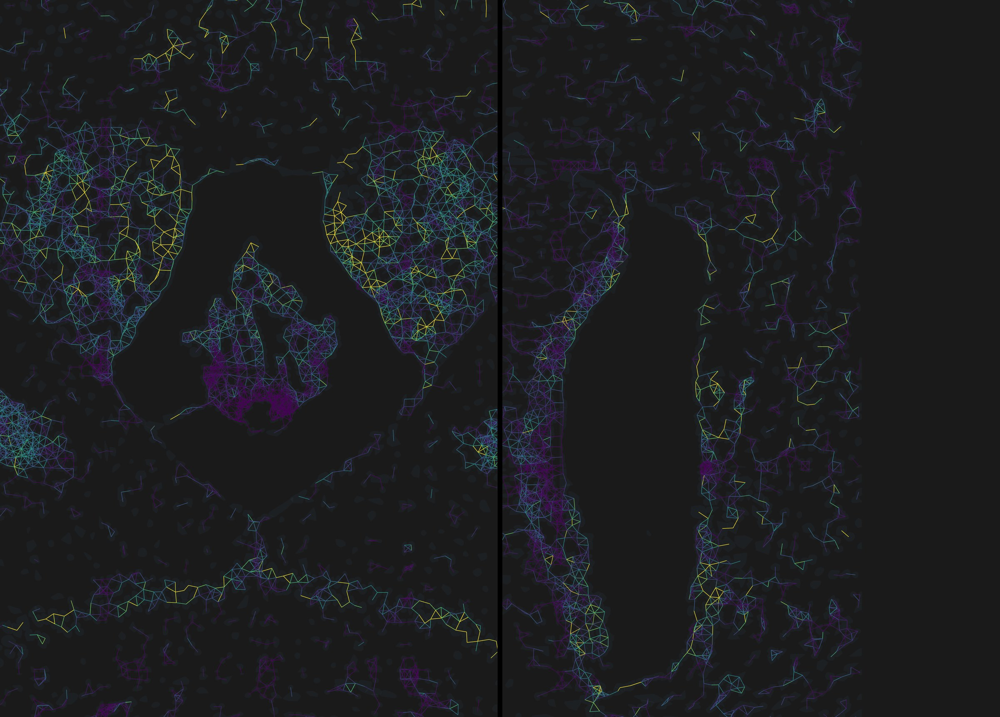
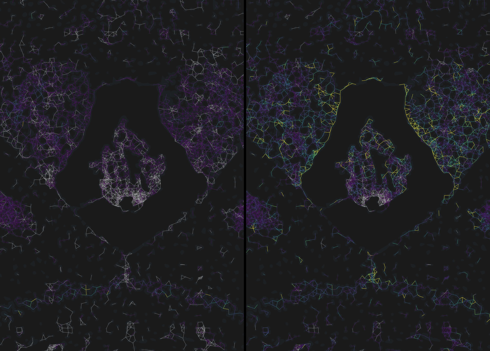
settings linked decides what is drawn: untick it to give one panel its own mechanism list, filter or opacity, and use copy panel 1 → panel 2 to push one side's settings onto the other in one step. shared colour scale across panels decides how it is coloured. Leave the second one on for any figure; untick it only when one panel's range is so much narrower that sharing flattens it, and say so in the legend.
7A figure for the paper
A screenshot is limited to the pixels on your screen. Export… redraws the data layers at whatever size you ask for, because they are geometry rather than pixels, and writes the DPI you choose into the file so a journal's resolution check reads it.
- Choose ▭ Rectangle and drag over the region you want. The rectangle stays on the tissue while you pan.
- Click Export…. Pick a preset, 3.5in @500 for a single column or 7in @500 for a double, or type a width in pixels. Choose a background, tick scale bar, and click Export PNG.
- For a quick slide, Save PNG saves the panel as shown, image included, at screen resolution.
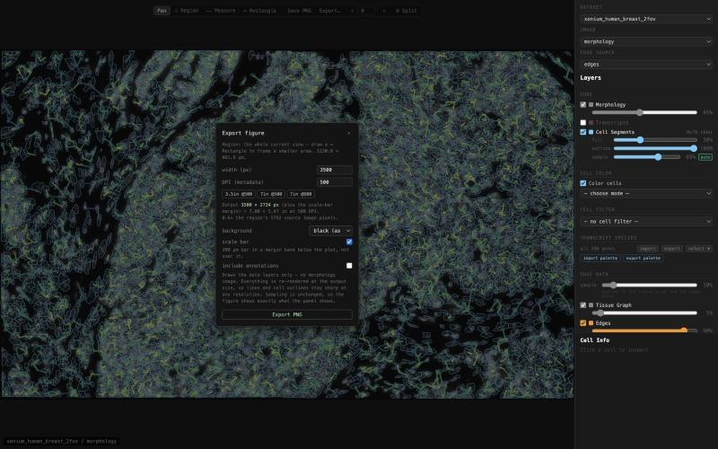
- Line weight is fixed in output pixels, so export every panel of one figure at the same pixel width or their lines will not match.
- The morphology image is not included in Export…; it cannot be sharper than the source TIFF. Use Save PNG when you need the image, and the vector export for the data layers.
Where to go from here
User manual
Every control, the install steps, and the R commands that produce edges.parquet with NICHESv2.
Edge file format
The column specification for edges.parquet, so any pipeline can produce one.
Datasets and licences
Where each demo dataset comes from, what was trimmed, and further public data to try.